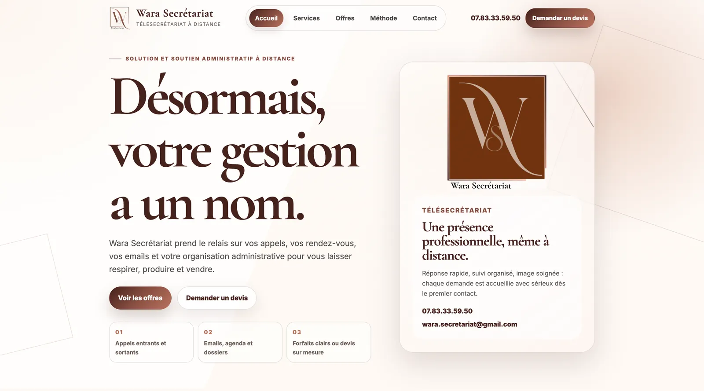

16 projets, une même exigence.
Sites vitrines, e-commerce, plateformes SaaS et applications mobiles : une sélection de projets livrés pour des clients, des associations et mes propres produits.

Planora
2026Agenda professionnel tout-en-un : planning, prise de rendez-vous en ligne 24/7, gestion d'équipe, rappels automatiques et abonnements. Disponible sur le web et en application iOS.

Ebenora Beauty App
2026Application mobile de beauté premium pour les peaux mélaninées : catalogue, diagnostic de peau, routines personnalisées, panier et commandes. En test public sur TestFlight.

Ebenora Beauty
2026E-shop de cosmétiques pensé pour les peaux noires, brunes et ébènes : boutique, diagnostic de peau en 1 minute, routines par carnation et paiement en ligne.

SferaLuna
2026Plateforme de rencontre premium réservée aux femmes qui aiment les femmes : profils vérifiés, Circle of Six, Mode Fantôme, messagerie temps réel et événements.

Vwa Kiltirèl
2026Site de l'association culturelle afro-caribéenne Vwa Kiltirèl à Tours : agenda des événements, médiathèque, actualités, adhésion, dons et newsletter.

Boxing Club Tours
2026Site officiel du Boxing Club Tours Métropole : 7 disciplines de combat et fitness, 3 salles dans la métropole de Tours, galas, inscriptions en ligne et espace d'administration.

Wara Secrétariat
2026Site vitrine pour une entreprise de télésecrétariat gérant appels, emails, planning et tâches organisationnelles à distance pour les professionnels.

AURA
2026Plateforme premium dédiée aux créateurs de contenu, positionnée autour de l'élégance personnalisée et d'un branding luxe.

Mode & Motion
2025Plateforme élégante pour agence de mannequins avec books interactifs, candidatures, interface multilingue et gestion dynamique. Développée en HTML, CSS, JavaScript, Node.js, Express et MongoDB.

Global Explorer
2025Atlas mondial couvrant 250+ pays avec données en temps réel, 40+ indicateurs économiques et démographiques, filtres avancés et export PDF/CSV.

HealthyFood
2024Un site de repas diététiques permettant aux utilisateurs de consulter des menus et passer commande. Design épuré, navigation fluide, réalisé en HTML, CSS et JavaScript.

Jeyko Location
2024Plateforme de location de véhicules permettant de réserver et accéder à une voiture entièrement via smartphone, sans clé physique ni guichet, disponible 24/7.

Gaming Campus
2024Site d'une école spécialisée dans les métiers du jeu vidéo, proposant des formations en management gaming, création de jeux et esport.

Elium
2024Site présentant Elium, un réseau décentralisé peer-to-peer basé sur la blockchain avec Proof of Coverage et tokens LongFi pour la connectivité sans fil.

Data Calculator
2023Application de calcul et réservation avec dashboard interactif, visualisation de données en temps réel et reporting automatisé.

Country App
2022Application éducative sur les pays du monde : drapeaux, capitales, populations. Développement en JS, design responsive.
Un projet en tête ?
Parlons-en.
Consultation gratuite de 30 minutes pour cadrer votre projet. Réponse sous 24 h ouvrées.
Démarrer un projet